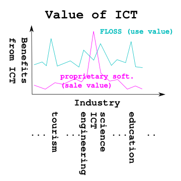
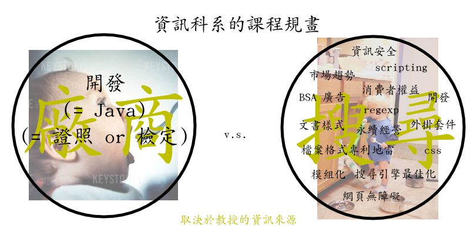

大學選系：建議避免「輕使用、重開發」的資訊科系

◎ 本篇文章傳達筆者意見，不代表自由軟體鑄造場電子報立場，回覆意見請見部落格原文網址：https://blog.ofset.org/ckhung/index.php?post/113c。
「子女即將上大學，應如何選系？唸資訊系好嗎？」最近這兩三個月，前後共三次被朋友問到類似的問題。我的回答是：建議不要選資訊科系。這篇文章詳細解釋原因。
今日的大學資訊科系，尤其是科技大學的現況是：
*只有開發者觀點，過份強調創新：「開發軟體，為資訊產業創造最高的販售價值」；
*欠缺使用者觀點，過份輕忽擴散：「善用網路上既有的軟體，為非資訊產業創造最高的使用價值」。
不幸地是，資訊產業生態當中，有一大塊其利益與使用者的利益衝突。當資訊科系的教授與資訊產業結合，而資訊科系畢業生的就業市場卻未必局限於資訊產業的時候，資訊科系的學生便成為這個利益衝突的犧牲品。在資訊科系改變價值觀之前，建議那些「對玩電腦有興趣但沒有把握是否會寫程式」的同學，應避免選填資訊科系。
一、資訊教授使用軟體的能力
資訊教授之所以無法幫助非資訊產業創造使用價值，是因為我們自己本身的專長本來就不是使用軟體。在很多方面，資訊教授對於使用軟體所應具備的常識與眼光，都和一般消費大眾一樣貧乏與淺短。如果你本來就熱衷開發軟體，也許還可以考慮唸資訊科系；如果你想學習如何善用軟體，那麼搜尋引擎和許多教學部落格比資訊科系的教授更能教你實用的知識。
例如，甚少資訊教授注意雲端代步工具的安全性。瀏覽器之於電腦的健康，就像是皮膚之於身體的健康一樣：它是與外界接觸的第一道防線；也是駭客潰客入侵時所面對的第一個關卡。如果有什麼軟體最應該隨時更新，當然非瀏覽器莫屬。Microsoft 的 IE6 安全問題百出，極易讓用戶的電腦被綁架加入殭屍網路（也請搜尋「ie6 security」）。Microsoft 已經推出 IE9，一位關心自身資訊安全的使用者—不論他是不是資訊教授—如果對於 Microsoft 的產品有著不可動搖的品牌忠誠，如果不願意改用其他比較安全的瀏覽器，至少也應該接受 Microsoft 的勸告，盡速升級至 IE9。但是全臺灣一百多所大學，似乎只有世新大學警告師生丟棄 IE6，改用 IE8；其他大學的電算中心對於這個問題沒有明確大聲的回應（也請搜尋「大學 ie6」）。有些大學，特別是科技大學，甚至還強迫師生使用舊版 IE。資訊教授非但不重視自身安全，甚至間接協助殭屍電腦軍團招募新血，導致行政院遭中韓潰客惡意攻擊，導致臺灣在全球殭屍網路排行榜上名列前茅（第二名或第六名）。如果你想學習如何安全地使用電腦，搜尋引擎比資訊科系更能幫助你（搜尋「browser security」）。
另一方面，最不需要、最不應該升級的軟體—Office—卻在某些電算中心主任的堅持之下，盲目升級。作為消費者方的採購代表，許多大學電算中心主任沒有能力扮演一位稱職的採購人員，不在乎全國校長集體被 Microsoft 羞辱、不在乎置大學於 docx 檔案格式專利地雷的險境、不在乎大學成為 BSA 抓盜版的幫兇。大學電算中心主任甚至無法回答一個簡單的問題：「當 Microsoft 的利益與僱主的利益互相衝突的時候，你維護誰的利益？」面對執意陷害僱主學校冏性升級 Office 的電算中心主任，大學資訊教授們普遍保持沈默，沒有評論。大學資訊教授普遍誤判各家與各版本 Office 市場佔有率，當然更沒有能力談論「檔案永久保存」或「永續經營的資訊政策」之類的長遠議題。如果你想知道如何使用電腦才能避免資料被綁架，如果你想協助企業永續經營、想要協助未來的僱主安然渡過 BSA 的每年一抓、想要知道 Office 市場的真實市佔率，Google Trends 和各家搜尋引擎比資訊科系更能幫助你。
你在大多數的資訊科系裡面，難得有機會學到：
* 文件的內容與外觀應該脫鉤處理，可以提高文書處理的效率與外觀一致性（「Office 樣式」或「OpenOffice 樣式」）；
* 善待不同的瀏覽器、善待視障者，就是善待搜尋引擎，善待自己的點閱率，有助於避免變成自殘的網站（「搜尋引擎最佳化」或「SEO」）；
* Windows 7 的盜版警察已經入侵你的電腦（「盜版警察」）；
* DRM「遙控數位枷鎖」產品和形同監獄的產品（例如禁止越獄的 iPad）傷害消費者，像是黃金手銬、鑽石腳；
* P2P 有很重要的正當用途；（「P2P 合法」）
* wiki 就是雲端版的文書處理軟體；現成的 JavaScript 加網頁就是雲端版的簡報軟體；如果並不特別想善用 wiki 的 web 2.0 特性的話，SSH 和 VNC 就是最完整的雲端桌面；（「雲端簡史」）
* ...
（請用上述關鍵詞搜尋。）
普遍來說，多數的資訊教授沒有能力教學生善用軟體—不論是花錢買來的專屬軟體，或是網路上的自由軟體。許多資訊教授不懂得或甚至壓根就不願意上網搜尋，更遑論親身試用、比較同性質各種替代軟體的優劣。你在資訊科系，難得學到善用軟體的知識，難得學到如何保護自身消費權益，更難得學到長線投資的電腦學習策略。
二、資訊教授開發軟體的條件
但是另一方面，許多資訊教授不僅有很好的軟體開發能力，大學資訊科系更有著絕佳的軟體開發條件—因為我們資訊教授所處的環境，不僅遠遠優於一般用戶和企業，甚至也優於多數的中小型軟體公司。
*我們買軟體，只需要填表格，不需要掏自己的腰包—學校會用學生的學費來買軟體，我們不痛不癢；
*就算我們用盜版軟體，也不需要擔心 BSA 來抓—我們是軟體公司不花錢的駐校行銷代表；
*如果買不到軟體，我們有很多免費或廉價的程式設計工讀生可以用，開發軟體的成本極低；
*中小型的軟體公司對資訊教授有所求—資訊教授可以協助推銷產品、推銷證照；可以協助尋找能力好、價格低的程式設計工讀生；
這麼多異於一般軟體消費者也異於一般軟體公司的優沃條件，反而侷限了多數資訊教授的視野—資訊教授只有「開發者」的視野，沒有「使用者」的視野。當你向資訊教授提議：「用自由軟體會不會比較省錢？」許多資訊教授會回答：「我用這套也不用錢啊！」或「自由軟體品質不好。」—即使他從未拿「alternative」和「comparison」跟他所熟悉的軟體名稱一起搜尋過，他也敢這麼說。就算沒有「感覺不出昂貴的」現成軟體可以用，資訊教授還是不想上網搜尋自由軟體。「何不自己開發？」我們資訊教授是一群「何不食肉糜？」的現代晉惠帝。
此外，教育界「獨尊論文」和「重創新、輕擴散」的風氣，以及社會整體用「產值」談「教育」的風氣，更是火上加油。於是，面臨兩個選擇的時候：
* 善用最便宜、最好是不必開發就可免費取得的技術，幫其他產業及資訊產品消費者打造最安全、最有效率的資訊應用環境。或者，
* 開發利潤最高的新技術，從其他產業及資訊產品消費者身上賺到最多的錢。
你猜猜資訊教授會選擇那一條路？於是，我們寧可用苦行僧的方式開發系統，也不願意搜尋「cms comparison」。例如美國白宮和英國 BBC 選用了現成的 Drupal；iTWire 與巴西保時捷選用了現成的 Joomla。透過網路，這些現成的系統經過無以數計的測試。相對地，我們自己的學生所開發的資訊系統，不僅經過甚少人測試，有時甚至具有自殘傾向。即便前者比後者更能夠替最終使用者帶來更高的安全、無障礙、網頁行銷等等效益，我們對於網路上既有的免費雲端資訊系統，還是不屑一顧。於是多數資訊教授選擇了下圖當中比較相容於「獨尊開發」價值觀的那一條專屬軟體紫紅線，而不是較相容於「推廣應用」價值觀的那一條自由軟體青色線。

▲ 圖1 資訊通訊技術的價值
三、資訊科系學生的就業市場
但是絕大多數資訊科系學生未來的就業市場，其實應該是在非資訊產業。
我這個結論，來自許多閱讀、觀察與推理。其中包含閱讀「長尾理論」及「世界是平的」這兩本書的心得；以前也曾經寫過「紙筆產業的價值」、「尺規文明」等等寓言來表達與此相關的概念。但是從這個角度談，會一發不可收拾。以後另文再詳談。
這兩天讀到的「資管人員地位未定論」也有類似的看法。我很贊同作者的觀察；但我的結論不一樣：如果數學很重要，那麼應該是大家都學用自由數學，都學會當一個聰明的消費者，而不是如尺規文明寓言當中的比喻一般，每個人都僱用一位推銷「Offer-ease 三角函數表」的數學秘書。
今天我們只從創作競爭力的觀點來看這個問題：
* Microsoft vs 自由軟體，誰的創作競爭力比較高？手機市場上，Android 直逼龍頭 Symbian；Windows 遙遙落後。Microsoft 的反應不是推出更強的產品，而是興訟。注意：這裡的重點不是誰比較道德，也不是最終誰會贏—例如靠著打官司的財力取勝。這裡的重點是「創作競爭力」的比較。
* Microsoft vs 其他多數「有在開發販售軟體」的公司，誰的創作競爭力比較高？
* 一個班的資訊科系學生，有多少比例能夠進入「有在開發販售軟體」的公司工作？這些公司包含 Microsoft，以及其他所有「創作競爭力高於、等於、低於 Microsoft」的公司所提供的有限就業機會。
前兩點，還有上述資訊教授苦行開發劣質軟體的案例，應該讓所有幻想「進資訊產業寫軟體賣錢」的人，有所警惕：資訊人力市場的短頭 (short head) 將越來越難生存。第三點、「未定論」一文，及上面圖示，則共同指向「在非資訊產業善用自由軟體幫老闆省錢」的新興長尾市場 (long tail)。最後，三點合起來看，也提醒著想要進入資訊科系的同學應該思考：
* 協助消費者變聰明，協助消費者上網搜尋，協助消費者「善用」既有的自由軟體；
* 「開發」創造新的軟體，試圖販售給消費者。
這兩條人生道路，那一條會比較順利？尤其要把「與網路為友或為敵？」這個重要問題考慮進去。
四、資訊產業與消費者的利益衝突，在資訊科師生間上演
不幸的是，主流的資訊產業，與消費者之間，兩者的利益其實是對立的。上面那張圖以及「尺規文明」的寓言說明了利益衝突背後的動力；而 Microsoft 控告 Android 侵犯專利以及上述的 DRM、盜版警察、趨勢科技的安全觀……等等，則都是利益衝突的具體例子。也請搜尋「用正版」、「全部換正版」。
但是這個衝突還發生在另一個大家意想不到的地方：資訊科系師生之間的利益衝突。我講的不是明顯的廉價勞工—這就算是個問題，也不是資訊科系獨有的問題。我講的是：與資訊產業利益密切結合的資訊教授 vs 未來就業落點可能落在非資訊產業的大多數資訊科系學生，兩者之間的利益衝突。
前者不僅拒絕從消費者的角度去看企業導入資訊科技的問題，還設計了「獨尊開發」的課程與制度。例如朝陽科技大學資訊學院的「Java 證照或程式檢定」畢業關卡，讓我們的一些學生被迫花錢補習考證照才能準時畢業。就像學術界獨尊論文的「瘋」氣一樣，「獨尊開發」的錯，不在於「尊開發」，而在於「獨」。我們以少數學生未來的可能出路作為設計課程與制度的依據，卻封鎖了那些將來可能就業於非資訊產業的多數學生的視野。有許多學生勉強學會陣列、迴圈、與副程式，考過程式檢定，我們就認為這樣已經幫他們做好了就業準備。但他們實際上並不會走入開發（消費者：你最好禱告不要買到這些學生所開發的軟體）。另一方面，我們完全不教他們如何幫未來的僱主上網搜尋、比較、下載、安裝、設定「零元授權費」的正版軟體—例如上面所提的「cms comparison」。
可悲的是，中等程度甚至中上程度資訊科系的中後段學生（我不好意思講出心中真實的數字；且說保守估計是百分之七十吧），在這樣的課程設計之下，自以為不會寫程式就沒有前途，因而喪失了對資訊技術的興趣。資訊科系的學生甚少有機會被告知自由軟體的存在，甚少有機會被告知：「不會開發軟體沒關係，社會還需要使用軟體的人力；你不需要把就業市場鎖定在開發軟體的短頭資訊產業，你也可以在使用軟體的長尾非資訊產業裡面就業。」就算知道了，也還是無法從正式課程當中得到足夠的訓練，更還是必須面對「不會寫程式就無法畢業」絕對關卡的封殺。就像他們的老師一樣，對社會明明可以有其他方面的貢獻，但卻遭到「不寫論文就無法生存」絕對關卡的封殺。十分諷刺；雙重可悲。
最後，這一群本來可以幫助消費者善用既有自由或專屬軟體的中後段學生，變成了資訊產業與消費者利益衝突下的犧牲者。令人難過的是：資訊教授並不是惡意陷害與放棄中後段的學生；而是因為我們拒絕從「聰明消費」的角度思考；我們只會從「開發賺錢」的角度思考。因為「資訊科系的學生當然要會寫程式」的成見，如此根深蒂固不可動搖、且盤根錯節地融入我們的腦海當中，再加上「何不食肉糜」的優渥條件，以致於就算我們都已經看見這個價值觀造成如此明顯的困境，我們還是不敢去挑戰這個來自廿世紀的沉重遺產。我們甚至真心地相信「通過程式檢定或取得 Java 證照才能畢業」符合學生的利益。
五、大學選系時的聰明消費
在進入結論之前，請讓我描述一下自己兩個身份的尷尬處境。身為自由軟體推廣者，我在乎的是軟體的民主性以及發揮軟體對社會整體的使用價值（而不是提升資訊產業的販售價值）。另一方面，身為資訊教授，我在乎的是學生的就業，呃...還有我的薪水。如果資訊科系的課程設計，與學生的就業、民主、使用價值一致，或至少不與其中任何一項違背，那麼我大可以不要惹是生非，乖乖安靜地躲在角落開一些自由軟體相關的課程就是了。但不幸的是，今日的資訊科系的文化與課程設計，與就業、民主、使用價值都背道而馳。當我所處產業學術領域的利益，與社會的利益，甚至與我們的顧客我們的學生的利益互相衝突時，我只好選擇維護學生與社會的利益。
其次，我的意思並不是說所有的資訊科系學生都應該放棄學寫程式，也不是說寫程式的行業就一定與社會的利益衝突。而是說：社會對於「程式設計」的人力需求，遠遠不及對於「懂得善用既有自由軟體」的人力需求。
再來，並不是說整個資訊產業都在與消費者為敵，也不是說所有資訊教授都只會寫程式、都不懂得當一位聰明的消費者、都沒有上網搜尋比較軟體優劣的能力。這篇文章所談的，是普遍、高比例的怪異現象；但當然也有很多例外—例如推廣自由軟體的教授，及搭載自由軟體或販售自由軟體相關服務與產品的資訊廠商。只是，這些微弱的聲音，需要有消費者—您—用輿論支持，將來才有機會在各校的資訊科系裡面發揮影響力。Office 2007 的經驗，相當程度證明了：輿論，也是市場機制當中很重要的一部分。

▲ 圖2 資訊科系的課程規劃取決於教授的資訊來源
這篇文章的終極目的，是在促成資訊科系改變，讓資訊教授們重新思考：「我們做的事情，真的符合社會整體以及大多數學生的利益嗎？」「當 Microsoft 的利益與僱主的利益互相衝突的時候，你維護誰的利益？」如果資訊科系的許多教授，他們的價值觀已經錯亂到無法回答這個問題，普遍保持沈默，那麼對於另一個問題，你又怎麼敢期待資訊教授們能夠像任何正常人一樣毫不猶豫地講出讓你點頭讚許而非讓你忿怒心碎的答案呢？「當軟體廠商的利益與學生的利益互相衝突的時候，你維護誰的利益？」我難過地發現：也許需要更震撼的效果，才能喚起資訊科系教授的覺醒。如果有夠多學生在進入資訊科系之前三思，進而讓資訊科系整體的分數普遍下降；如果某些資訊科系裡面有夠多的資訊教授警覺，開始改從消費者的角度及網路搜尋的途徑獲得資訊，而不再只是接受廠商 spoon-fed 的資訊；如果這些資訊科系（例如推廣 Moodle 的銘傳大學？）終於了解到：改變課程設計、轉而與社會整體的利益同調、從消費者的角度著眼、重視使用價值、推廣自由軟體，這將有助於網路行銷自己的科系，那麼也許就會開始一個正循環，而資訊科系也許有一天將再度成為值得考慮的志願。這對學生和整個社會都有好處。
所以，不只要請高中生的父母傳閱這篇文章，還要請那些已經誤入資訊科系、愛探索軟體但不愛寫程式的學長姊們，也轉寄提醒還在高中的學弟妹們三思是否真的要唸資訊科系。還有那些「快被 BSA 逼得走投無路的老闆們」也請傳閱這篇文章，協助員工的子女避免誤入「輕使用、重開發」的資訊科系。這不只是在協助員工子女做更廣面向的獨立思考，幫助他們避免浪費青春，更是你能夠用行動抗議 BSA 背後共犯結構的少數機會之一。在大學學位供過於求的今日，準大學生和家長們，更可以提高篩選校系的標準，更應該要把握唯一的一次機會，當一位聰明的消費者。因為大學市場和其他市場不一樣，「花錢是大爺」的原則，不太適用。在資訊領域科系尤其不適用。一旦你進了資訊科系，對不起，沒有鑑賞期，恕不退換貨，一切都已經太晚了。另一方面，名額空出，分數降低，讓那些真心喜歡寫程式的學生進資訊科系，對學生好，也比較符合今日多數資訊科系課程設計的期待。
最後，既然今天的大學—尤其是科技大學—類似產業更甚於教育事業，我就用哈佛商業評論的 Umair Haque 所著的《The New Capitalist Manifesto：Building a Disruptively Better Business》一書當中的兩句話來奉勸所有的資訊教授：
The single most significant difference between revolutionaries and also-rans，victors and vanquished today？A lack of understand of (and turning a blind eye to) ethical capital.
今天區分勝負高下的唯一關鍵是什麼？就看你是否理解「道德資產」，是否把它看在眼裡、當一回事。
Make stuff that doesn’t just perform in terms of yesterday’s numerators — short-term income，“profit”，shareholder value — but that performs in terms that are longer-lived，that matter more to people，communities，and society.
不要拿昨日的數字績效—短期收入、利潤、股東價值—來當做生產的指標，改用具有長遠價值、對人們、社群、社會真正有意義的指標。
「員工的 Office 證照數」vs「免於 BSA 抓盜版的恐懼」，何者是昨日的數字績效？何者是真正有意義的指標？資訊教授們如果無法分辨，請 e-mail 或來電，我很樂意提供免費諮詢。我的 e-mail 與電話？您可以藉由 Google、Yahoo、還有 Microsoft 的 Bing 搜尋得知。
在資訊教授們集體改變方向、停止與社會作對之前，在「BSA 對企業的年度騷擾」成為資訊教授們可以用同理心去感受的重要議題之前，我不得不與多數資訊教授作對，也已經準備好承受這個呼籲所帶來的多方面後果—畢竟薪水的誘惑，讓我不忍主動離開這個供養我輕鬆食肉糜的行業。